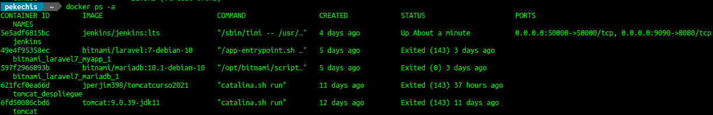

Conforme vayamos usando docker el número de contenedores que tenemos funcionando irá en aumento hasta que llegue un momento en que no sepamos con seguridad aspectos como si el contenedor tenía persistencia o no, si tenía redirección de puertos o no, si le había puesto algún nombre o estaba usando un nombre concedido por docker etc...
En ese contexto hay varios comandos docker que me van a ayudar a obtener información de un contenedor. En este curso vamos a usar los dos siguientes:
La orden docker ps.
La orden docker inspect.
La orden docker logs.
DOCKER PS
La orden docker ps nos va a servir para obtener información de los contenedoresya arrancados. La información que nos proporciona va a ser menos exhaustiva que la que podemos obtener con docker inspect pero nos puede ayudar a determinar aspectos como:
El estado del contenedor (Parado EXITED o Funcionado UP).
La imagen de la que deriva el contenedor.
El tamaño actual del contenedor.
La orden que ejecuta el contenedor al arrancar, lo que se llama el ENTRYPOINT (hablaremos de ello en el capítulo 6).
El nombre del contenedor, ya sea dado por nosotros o por docker.
Cuando fue creado el contenedor.
Las redirecciones de puertos, en caso de haberlas.
Como muchas de las órdenes de docker ps tiene multitud de opciones (flags) así que para ilustrar su uso mejor vamos a poner varios ejemplos de las más usadas.
# Mostrar los contenedores que están en ejecución
> docker ps
# Mostrar todos los contenedores, estén parados o en ejecución (-a o --all)
> docker ps -a
# Añadir la información del tamaño del contenedor a la información por defecto (-s o --size)
> docker ps -a -s
# Mostrar información del último contenedor que se ha creado (-l o --latest). Da igual el estado
> docker ps -l
# Filtar los contenedores de acuerdo a algún criterio usando la opción (-f o --filter)
# Filtrado por nombre
> docker ps --filter name=servidor_web
# Filtrado por puerto. Contenedores que hacen público el puerto 8080
> docker ps --filter publish=8080
Hay mas opciones e incluso podemos formatear la salida usando el flag --format, pero con estas tenemos más que suficiente para poder empezar a trabajar con docker.
Una vez ejecutamos el comando elegido obtendremos una salida similar a la siguiente:

Juan Diego Pérez Jiménez. Obtención de información de los contenedores con docker ps -a(Dominio público)
Podemos ver que las filas nos muestran información de cada uno de los contenedores. El tipo de cada información vienen reflejado en las columnas y podemos apreciar que las redirecciones de puertos solo se muestran en aquellos contenedores que están en ejecución (UP).
Los contenedores parados tiene el estado(Status) EXITED.
DOCKER INSPECT
Si la información que hemos obtenido usando docker ps , que es una información general, no es suficiente para nuestro objetivo deberemos usar la docker inspect que nos va a dar una información detallada del contenedor que seleccione. Lo podemos hacer de las siguientes formas:
# Por nombre. Por ejemplo: Mostrar información detallada del contenedor cuyo nombre es jenkins
> docker inspect jenkins
# Por id. Por ejemplo: Mostrar información detallada del contenedor cuyo id es 5e5adf6815bc
> docker inspect 5e5adf6815bc
Al ejecutar esto obtendremos una imagen similar a la siguiente:
Esta imagen es una imagen parcial, porque se nos muestra mucha información, está en formato JSON (JavaScript Object Notation) y nos da datos sobre aspectos como:
El id del contenedor.
Los puertos abiertos y sus redirecciones
Los bind mounts y volúmenes usados.
El tamaño del contenedor
La configuración de red del contenedor.
El ENTRYPOINT que es lo que se ejecuta al hacer docker run.
El valor de las variables de entorno.
Y muchas más cosas....
Adicionalmente podemos formatear la salida usando Go Templates y el flag --format/-f. Una descripción detallada queda fuera de los objetivos de este curso pero vamos a poner varios ejemplos:
# Mostrar la ip del contenedor
> docker inspect --format 'La ip es {{.NetworkSettings.Networks.bridge.IPAddress}}' jenkins
La ip es 172.17.0.2
# Mostrar las redirecciones de puertos del contenedor
> docker inspect --format 'Las redirecciones de puertos son {{.NetworkSettings.Ports}}' jenkins
Las redirecciones de puertos son map[50000/tcp:[{0.0.0.0 50000}] 8080/tcp:[{0.0.0.0 9090}]]
NOTA:Para poder este formateo debemos conocer en profundidad la estructura del JSON que nos devuelve.
DOCKER LOGS
Los dos comandos que hemos visto anteriormente nos dan información relativa al contenedor pero no nos dan información de lo que está pasando en el contenedor. Para determinar este tipo de cosas siempre hemos tenido los logs y siguen estando disponibles aunque estemos en docker mediante el uso de la orden docker logs, que me va a servir tanto para contenedores que estén parados como para contenedores en ejecución.
Los podemos hacer de las siguientes formas:
# Por nombre. Por ejemplo: Mostrar los logs del contenedor cuyo nombre es jenkins
> docker logs jenkins
# Por id. Por ejemplo: Mostrar los logs cuyo id es 5e5adf6815bc
> docker logs 5e5adf6815bc
Evidentemente los logs de una contenedor varían mucho de un contenedor a otro. No es lo mismo un log de un contenedor de base de datos que los logs de un servidor web. No obstante una posible salida si es un contenedor con jenkins seria esta: